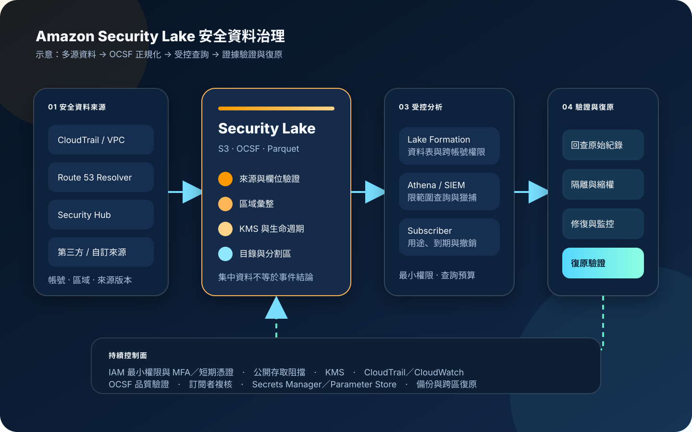

Amazon Security Lake：集中安全資料湖與 OCSF
Amazon Security Lake 將 AWS 原生安全紀錄、第三方安全資料與自訂來源集中到客戶帳號中的 Amazon S3 資料湖，並以 Open Cybersecurity Schema Framework（OCSF）正規化資料。服務可降低跨來源蒐集與格式轉換的負擔，但不會自動完成威脅判定、法遵證據保全、資料品質驗證或事件處置。
作者：Dr. William｜查閱與發布：2026-11-08
服務定位
Amazon Security Lake 會在選定 AWS 區域建立與管理安全資料湖，把支援的 AWS 來源轉換為 OCSF 格式並以 Apache Parquet 儲存於 Amazon S3。來源可包含 AWS CloudTrail 管理與資料事件、Amazon VPC Flow Logs、Amazon Route 53 Resolver query logs、AWS Security Hub findings，以及其他受支援的 AWS 安全資料；第三方產品與自訂來源也能在符合 OCSF 與寫入規則後納入。
服務適合處理「安全資料分散在多帳號、多區域與多種工具」「同一事件需要跨網路、身分與資源紀錄關聯」「多個分析工具需要受控取得同一份安全資料」等問題。Security Lake 負責資料湖與標準化基礎，不保證每筆來源資料完整、每個 OCSF 欄位語意正確，也不替代 SIEM 查詢規則、威脅獵捕、事件分級及人工判斷。
核心概念與服務邊界
資料與儲存
- OCSF：以供應商中立的安全事件綱要統一事件類別、欄位與語意，降低各來源格式差異。
- Data lake：資料保存在客戶帳號的 S3 儲存貯體；服務管理必要的彙整、分割區與中繼資料流程。
- Rollup Region：可將一個或多個貢獻區域的資料彙整到指定區域，支援集中分析與保留。
- Lifecycle：可依來源與區域設定 S3 儲存類別轉換及到期規則，平衡查詢需求與長期成本。
- Custom source：第三方或自建系統可提供符合 OCSF 的資料，但資料品質與欄位映射由提供方負責。
治理與取用
- Delegated administrator：可透過 AWS Organizations 指定委派管理員，集中設定組織內帳號與來源。
- Subscriber：獲授權的 AWS 帳號可透過資料查詢或資料存取模式使用特定來源；授權需限制來源與目的。
- Lake Formation：協助治理資料目錄、資料表與跨帳號查詢權限，不能只依賴 S3 bucket policy。
- Glue Data Catalog：提供資料表與分割區中繼資料，讓 Athena 或相容工具查詢。
- Security Hub 整合：Security Hub findings 可成為資料來源；Security Lake 本身不產生 finding 結論。
適合與不適合的使用情境
適合
- 多帳號、多區域環境需要將網路、身分、DNS 與安全 findings 集中到受控資料湖。
- 資安營運中心需要以 Athena、SIEM、分析平台或訂閱者工具進行跨來源查詢與威脅獵捕。
- 組織希望以 OCSF 降低不同工具的欄位轉換成本，並建立共用的安全資料契約。
- 安全資料需要分層保存，近期資料維持快速查詢，較舊資料轉至較低成本儲存類別。
- 第三方安全產品需要在明確授權下取得指定來源，而非直接取得整個日誌帳號或所有 S3 物件。
不適合或不能單獨完成
- 只有單一工作負載與少量日誌，沒有跨來源分析需求，導入後的治理複雜度高於實際價值。
- 期待啟用 Security Lake 後自動得到完整偵測規則、事件優先順序與處置流程。
- 來源沒有穩定時間戳、帳號、區域、資源識別或 OCSF 映射，卻直接把資料視為可信證據。
- 需要毫秒級即時阻擋或線上交易決策；Security Lake 的角色是分析資料層，不是流量內聯控制。
- 把資料湖當成唯一證據庫，沒有原始來源保留、完整性控制、法律保存與復原驗證。
示意故事案例：跨帳號異常資料存取調查
以下為示意案例，不代表特定企業或正式部署。 一家線上服務公司在多個 AWS 帳號執行網站、資料分析與後台管理。安全團隊收到 Security Hub finding，指出某個角色在非預期時間讀取大量 S3 物件。分析人員需要同時確認角色 API 活動、來源網路、DNS 查詢與受影響資源。
組織已在獨立安全帳號啟用 Security Lake，將 CloudTrail、VPC Flow Logs、Route 53 Resolver query logs 與 Security Hub findings 彙整到指定區域。調查人員透過短期工作階段與受限查詢角色，在 Athena 查詢相同時間窗的 OCSF 資料，找到角色工作階段、來源 IP、DNS 解析與 S3 存取事件的共同識別，再回到原始 CloudTrail 與 S3 資料事件驗證細節。
團隊沒有把查詢結果直接當成定案，而是保存查詢語句、時間範圍、資料分割區與原始證據位置，依核准程序撤銷工作階段、縮限 IAM、檢查公開存取與機密使用情況。復原後重新查詢相同控制條件，並驗證備份、跨區復原與監控告警仍可運作。

建置與運作流程
- 定義分析問題：先列出需要回答的事件問題、必要來源、保存期限、查詢延遲、區域與法遵限制。
- 建立安全帳號：以 AWS Organizations 指定獨立安全帳號為 Security Lake 委派管理員，避免工作負載帳號自行管理全域安全資料。
- 盤點來源與區域：確認各帳號實際使用的 CloudTrail、VPC、Route 53 Resolver、Security Hub 及第三方來源，避免只依組織清單推定資料存在。
- 選擇彙整架構：設定貢獻區域與 rollup Region，評估資料駐留、跨區複寫、查詢位置、區域中斷與復原要求。
- 啟用 AWS 來源：逐一啟用必要來源與版本，記錄帳號、區域、來源類別、事件時間與預期每日資料量。
- 驗證 OCSF：抽樣檢查事件類別、時間戳、actor、resource、network endpoint、severity 與原始事件參照，避免欄位存在但語意錯誤。
- 納入自訂來源：要求提供方遵循 OCSF、Parquet、分割區與寫入規格，使用專用角色與最小權限，不在程式碼或資料列存放任何機密值。
- 設定資料治理：以 Lake Formation、Glue Data Catalog、S3 policy 與 KMS key policy 限制資料表、來源、帳號與查詢角色。
- 建立訂閱者：依用途授權查詢或資料存取，只開放必要來源；記錄擁有者、到期日、接收系統與撤銷程序。
- 設定生命週期：依調查熱度與法遵設定 S3 儲存類別轉換、到期、保留與刪除核准，避免所有資料永久保留。
- 建立查詢基準：保存已核准的 Athena 或 SIEM 查詢，測試時間欄位、分割區裁剪、跨帳號識別與重複事件處理。
- 監控管理活動：以 CloudTrail 稽核 Security Lake、Lake Formation、Glue、S3 與 KMS 管理操作，以 CloudWatch／EventBridge 監控失敗、異常用量與權限變更。
- 串接事件流程：將查詢結果送入工單或 SIEM 時只傳必要欄位，不傳入憑證、Token、密碼、cookie 或完整敏感資料。
- 驗證原始證據：重要結論回到原始 CloudTrail、應用程式紀錄或來源系統，保存查詢範圍、版本與完整性資訊。
- 演練復原：測試來源中斷、彙整區域不可用、訂閱者失效、KMS 權限錯誤、資料表損壞與跨區事件的替代流程。
成本、可用性與維運考量
Security Lake 的主要服務費用與匯入及正規化的安全資料量有關；底層 S3 儲存、資料請求、生命週期轉換、跨區傳輸、Athena 掃描、Glue、Lake Formation、KMS、CloudTrail、CloudWatch、SIEM 與第三方訂閱者可能另外產生成本。成本估算應按來源、帳號、區域與每日資料量拆分，不能只以總儲存容量判斷。
Parquet、OCSF 與分割區設計有助降低掃描量，但查詢若沒有時間、區域、帳號與來源條件，仍可能掃描大量資料。應建立查詢預算、工作群組限制、異常用量告警與保留分層，並定期找出高量但低價值的來源。成本優化不能直接停用關鍵稽核資料，應先調整重複來源、無效查詢與不合理保留。
Security Lake 按區域運作，rollup Region 可集中多區資料，但不能把單一彙整區域視為沒有失效風險。事件應變計畫應保留原始來源的替代查詢方式，並驗證資料延遲、來源狀態、跨區傳輸、KMS 權限與訂閱者可用性。S3 的耐久性不等同完整備份策略；誤刪、錯誤生命週期、權限變更與加密金鑰失效仍需防護與復原程序。
Amazon Security Lake 特有資安風險與控制
- 集中後的爆炸半徑：安全資料湖包含跨帳號活動與網路關係；管理帳號、查詢角色、訂閱者與 KMS 管理者必須職責分離。
- 來源涵蓋被高估：持續比對 Organizations、啟用區域、來源狀態與實際資料分割區，對新帳號與無資料來源告警。
- OCSF 映射錯誤：以抽樣、契約測試與原始事件對照驗證事件類別、時間、主體、資源與嚴重度，不能只驗證欄位可解析。
- 自訂來源投毒：自訂提供者使用專用寫入角色、限制前綴與來源識別，驗證檔案格式、大小、時間窗與異常事件量。
- 訂閱者權限過大：每個訂閱者只取得必要來源與模式，設定擁有者、用途、到期日、定期複核與立即撤銷程序。
- Lake Formation 與 S3 權限不一致：同時檢查資料目錄、資料表、資源連結、bucket policy、IAM 與 KMS key policy，避免任一層形成旁路。
- 公開存取：S3 啟用 Block Public Access，禁止公開 ACL 與公開 bucket policy，並以 AWS Config 或等效控制持續檢查。
- 長期人員憑證：管理與查詢人員使用 IAM Identity Center、MFA 與短期憑證，禁止共用帳號與長期 Access Key。
- 機密進入安全紀錄：應用程式與自訂來源不得記錄 credential、Access Key、Secret Key、Token、密碼或 cookie；既有資料需遮罩或以 [REDACTED] 取代。
- KMS 可用性與權限：限制金鑰管理與解密權，監控 key policy、grant、停用與排程刪除；復原程序需考慮金鑰依賴。
- 查詢結果二次外洩：Athena 結果、SIEM 匯出與工單附件使用獨立加密儲存、最小保留、公開存取阻擋及細粒度權限。
- 生命週期誤刪：重要來源的轉換與到期規則需變更審核、測試、保留例外與復原演練，不能由單一管理者直接修改。
- CloudTrail 稽核缺口：集中記錄 Security Lake、S3、Lake Formation、Glue、KMS 與訂閱者管理操作，重要異動送至獨立監控。
- 只有集中沒有偵測：Security Lake 必須搭配 SIEM、GuardDuty、Security Hub、CloudWatch 或其他偵測與事件工作流程。
- 單區依賴：保留原始來源、替代查詢與跨區復原設計，定期演練 rollup Region 或訂閱者不可用的情境。
共同責任邊界
AWS 負責 Amazon Security Lake 受管服務的底層基礎設施、支援 AWS 來源的蒐集與 OCSF 正規化流程，以及服務與 S3、Lake Formation、Glue、Organizations 等 AWS 服務的整合。AWS 也負責雲端基礎設施的實體安全與受管服務本身的維護。
客戶負責選擇帳號、區域、來源、rollup Region、生命週期、訂閱者與分析工具，驗證 OCSF 資料品質，落實 IAM 最小權限、MFA／短期憑證、網路隔離、公開存取阻擋、KMS 加密、Secrets Manager／Parameter Store、CloudTrail／CloudWatch、備份與跨區復原。自訂來源的正確性、敏感資料最小化、查詢結果保護、事件判定與依法保存也屬客戶責任。
上線與維運可執行檢查清單
- □ 已列出安全分析問題、必要來源、帳號、區域、保存期限、資料駐留與責任人。
- □ 已指定獨立安全帳號為 Security Lake 委派管理員，並完成職責分離。
- □ 所有管理與查詢人員均使用 IAM Identity Center、MFA 與短期憑證。
- □ 已逐帳號、逐區域確認 AWS 來源啟用狀態與實際資料到達。
- □ rollup Region、貢獻區域、跨區傳輸與區域中斷替代方案已有文件與演練。
- □ OCSF 事件類別、時間、主體、資源、網路端點與嚴重度已抽樣對照原始事件。
- □ 自訂來源使用專用角色、受限 S3 前綴與格式驗證，未使用共用寫入身分。
- □ 資料湖、查詢結果與匯出儲存區已啟用 S3 Block Public Access。
- □ Lake Formation、Glue、S3、IAM 與 KMS 權限已共同檢查，沒有繞過路徑。
- □ 每個訂閱者都有用途、來源範圍、模式、擁有者、核准、到期日與撤銷程序。
- □ KMS key policy、grant、停用與刪除操作均受限並由 CloudTrail 監控。
- □ 自訂來源與應用程式紀錄不含 credential、Access Key、Secret Key、Token、密碼或 cookie。
- □ Secrets Manager／Parameter Store 用於管理整合所需機密，且讀取與輪替權限分離。
- □ CloudTrail 已記錄 Security Lake、Lake Formation、Glue、S3、KMS 與訂閱者管理活動。
- □ CloudWatch／EventBridge 已監控來源中斷、管理異動、異常資料量、查詢成本與整合失敗。
- □ Athena 工作群組、查詢條件、掃描量限制與成本預算告警已設定。
- □ S3 生命週期、保留與刪除規則已經變更審核，且不會誤刪法律保存資料。
- □ 重要調查結論會回查原始來源，並保存查詢、時間窗、分割區與證據位置。
- □ SIEM、工單、聊天與匯出資料只包含必要欄位，完整安全資料不會任意複製。
- □ 已演練來源中斷、KMS 權限錯誤、訂閱者失效、誤刪與跨區復原。
AWS 官方一手來源
- What is Amazon Security Lake?（查閱：2026-11-08）
- Source management in Amazon Security Lake（查閱：2026-11-08）
- Subscriber management in Amazon Security Lake（查閱：2026-11-08）
- Collecting data from custom sources（查閱：2026-11-08）
- Region management in Amazon Security Lake（查閱：2026-11-08）
- Lifecycle management in Amazon Security Lake（查閱：2026-11-08）
- Identity and access management for Amazon Security Lake（查閱：2026-11-08）
- Data protection in Amazon Security Lake（查閱：2026-11-08）
- Logging Amazon Security Lake API calls using AWS CloudTrail（查閱：2026-11-08）
- Amazon Security Lake pricing（查閱：2026-11-08）
- AWS Shared Responsibility Model（查閱：2026-11-08）
內容說明
本文依查閱日可用的 AWS 官方文件整理，作為基礎學習與架構討論材料；實際部署仍須依最新支援區域、來源版本、OCSF 規格、資料量、訂閱者、儲存生命週期、定價、法遵與復原演練結果調整。